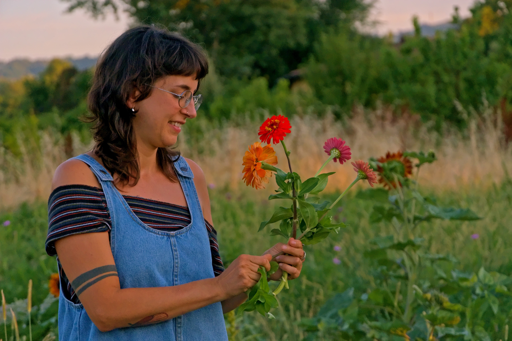
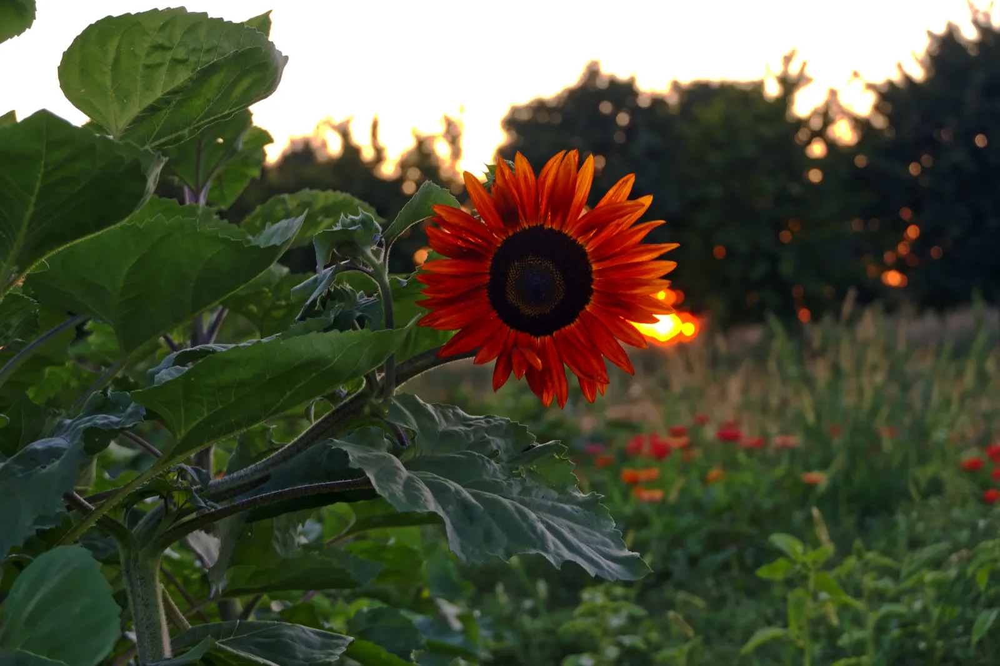

Consigli
Come far durare i fiori recisi più a lungo
Piccoli trucchi che uso ogni giorno per tenere i bouquet freschi per una settimana intera.
Leggi →Qualche riga su di te: chi sei, da dove vieni, cosa ti ha portata a fare questo lavoro. Scrivi con la tua voce, senza fretta.
Un secondo paragrafo per raccontare il tuo modo di lavorare, i tuoi valori o cosa rende speciale il tuo campo.
La mia storia →
Un angolo protetto di biodiversità, coltivato con amore e rispetto per i ritmi lenti della natura. Qui crescono fiori di stagione, erbe aromatiche e piccoli frutti, circondati dal ronzio delle api e dal profumo della terra.
Dal campo direttamente a te: fiori, miele e qualcosa di speciale.

Pomeriggi tra le aiuole, corone di fiori freschi, bouquet selvatici. Nessuna esperienza richiesta — solo voglia di stare nel verde e portarsi qualcosa di bello a casa.
Scopri i workshop →
Piccoli trucchi che uso ogni giorno per tenere i bouquet freschi per una settimana intera.
Leggi →
Zinnie, girasoli, cosmos: la mia lista dei semenzali preferiti e quando piantarli.
Leggi →
Dalle sei del mattino al tramonto: la mia routine quotidiana tra annaffiature, raccolte e ordini.
Leggi →Per ordini, informazioni o solo per un saluto dal campo.